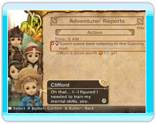

Chime te presentará cada mañana el informe del día anterior. Hay dos tipos de informes: informes de aventureros y el informe financiero.
● Informes de aventureros
Son los informes de las acciones de todos los aventureros durante el día anterior,
 En esta pantalla también puedes ver el estado y los objetos de cada aventurero.
Selecciona una línea del informe y pulsa  para obtener información detallada de las acciones de cada aventurero. Puede proporcionarte pistas útiles sobre la forma de despejar las mazmorras, los puntos fuertes y débiles de los aventureros y mucho más.
para obtener información detallada de las acciones de cada aventurero. Puede proporcionarte pistas útiles sobre la forma de despejar las mazmorras, los puntos fuertes y débiles de los aventureros y mucho más.
● Informe financiero
Las transacciones financieras del día anterior se detallan en este informe. Verás la cantidad de guiles empleada, los ingresos del reino por los diezmos, el elementite recuperado de las mazmorras y todo lo demás que necesites para planear los gastos del día siguiente.